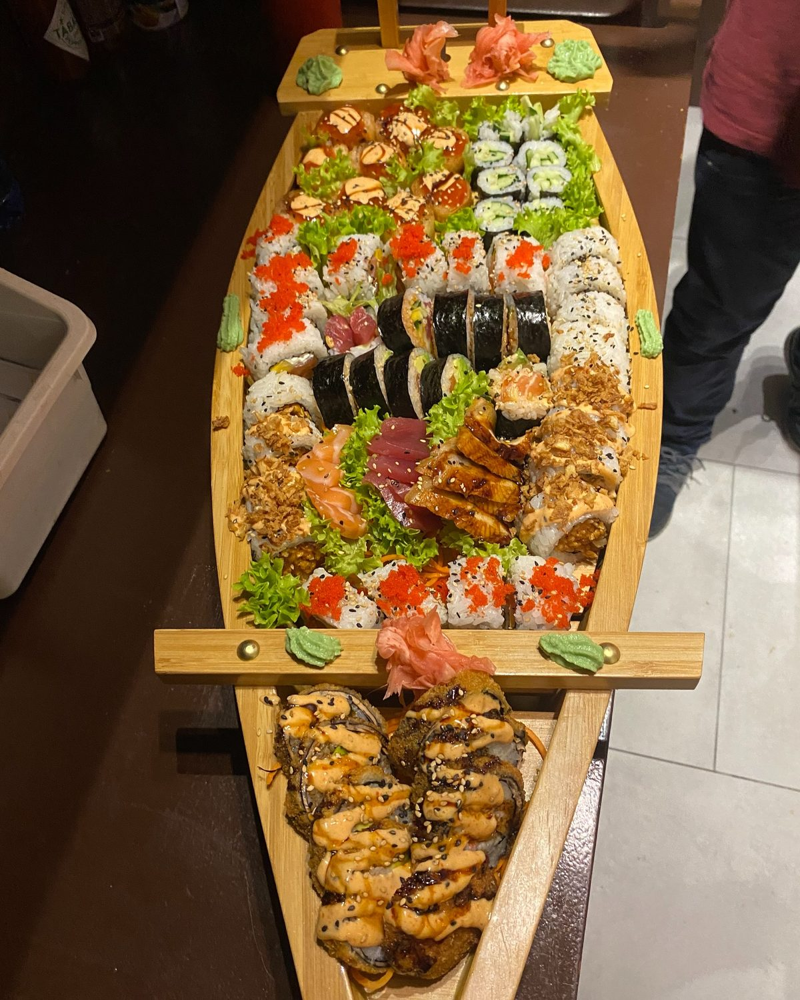
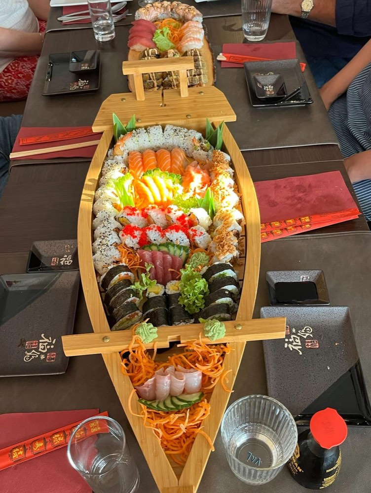
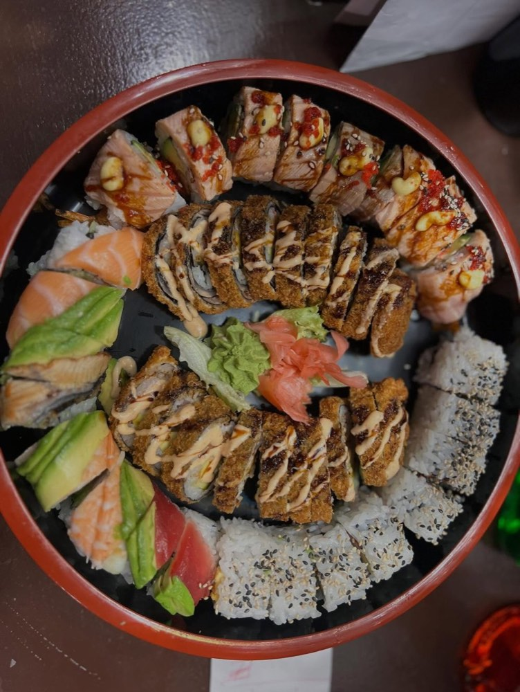
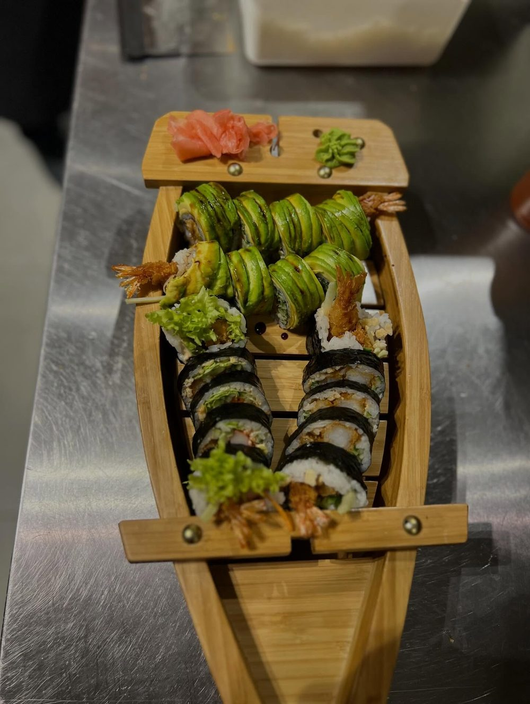
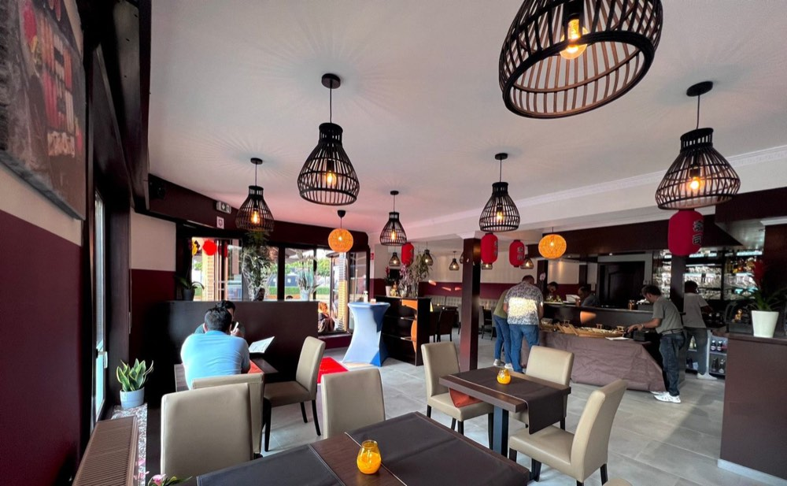
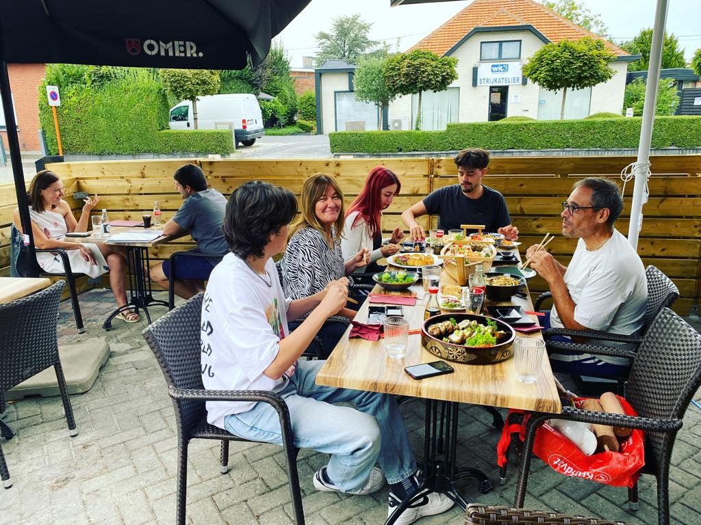

Feestdagen
Bestel uw sushiboot vooraf
Rond kerst en oudjaar is het druk in de keuken. Bestel online een paar dagen op voorhand en kies zelf de dag en het uur waarop u afhaalt.

Yakushi Sushi Bar · Tremelo
Verse smaken van de zee, kunstig gerold op je bord. Eet in de zaal of op het terras, haal af, of bestel online.
Onze signatuur
Een houten boot vol rolls, nigiri en sashimi, of een grote ronde schaal: zo komt sushi bij Yakushi op tafel. Voor uzelf, voor twee, of voor het hele gezin.



Een assortiment van sushi, sashimi en nigiri, van een boot voor één tot de Titanic deluxe voor vier.
Fusion boten en combo's
Over Yakushi
Op loopafstand van Tremelo centrum combineren we de klassieke en de hedendaagse Japanse keuken met de Thaise. Prijs-kwaliteit ligt ons aan het hart, in een ongedwongen sfeer.
Ons geheim? We werken alleen met verse, traditionele ingrediënten. En dat proeft u.
Niet alleen sushi
Liever iets warms? Elke schotel komt met rijst of noedels, en wie houdt van gebakken rijst of noedels, vraagt het er gewoon bij.
Kip, scampi, rund of vegi, in kokosmelk met bamboescheuten.
Met diverse groenten en chefsaus, op rijst of noedels.
Platte rijstnoedels met kip, rund, scampi of vegi.
Kip, zalm, rund of crispy eend, met gebakken groenten.
Dimsum gevuld met kip, per zes of per twaalf.
Actueel
Feestdagen
Rond kerst en oudjaar is het druk in de keuken. Bestel online een paar dagen op voorhand en kies zelf de dag en het uur waarop u afhaalt.
Elk jaar in februari
Twee glazen cava, miso soep en dimsum, daarna teriyaki crispy kip of een Love Boat, en dame blanche als dessert.

Reserveren
Kies online uw dag, uur en aantal personen, of bel ons. Liever thuis eten? Bestel online en haal af aan de Baalsebaan.
Veelgestelde vragen
Staat uw vraag er niet bij? Bel ons gerust op 016 41 64 11.
Van dinsdag tot en met zondag, telkens van 16:30 tot 21:30. Op maandag zijn we gesloten.
Ja. Bestel online of bel 016 41 64 11 en haal uw bestelling af aan de Baalsebaan 38 in Tremelo.
Reserveer online via TableAgent of bel ons op 016 41 64 11. U kunt binnen in de zaal eten of op ons terras.
Ja. De Thaise rode curry, de wok en de pad Thai bestaan ook in een vegi-versie, en op de kaart staan ook avocado-rolls.
Ja. Bestel online een paar dagen op voorhand en kies zelf de dag en het uur waarop u afhaalt. Rond kerst en oudjaar raden we dat zeker aan.
Aan de Baalsebaan 38, 3120 Tremelo, op loopafstand van Tremelo centrum en vlakbij Baal, Haacht, Keerbergen en Rotselaar.
Langskomen
Op loopafstand van Tremelo centrum en vlakbij Baal, Haacht, Keerbergen en Rotselaar.
Di – zo open van 16:30 tot 21:30
AdresBaalsebaan 38, 3120 Tremelo
Telefoon016 41 64 11
E-mailinfo@yakushisushi.be
Plan uw route